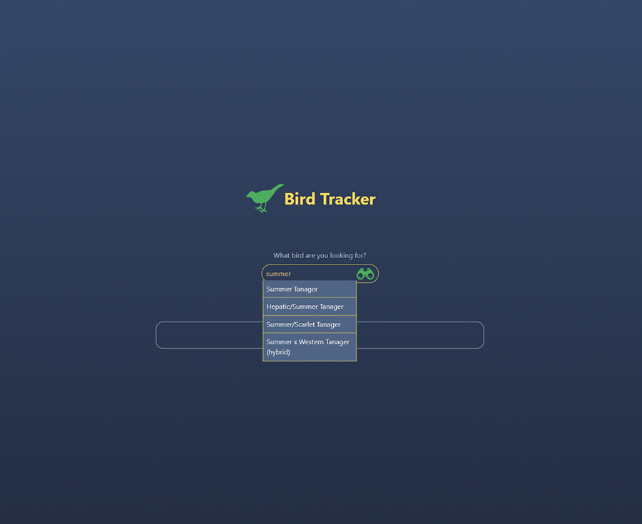

Front-end developer based in Portland, OR, with experience in HTML-CSS, JavaScript, C#
and React.
Skilled in communication and problem-solving, I'm excited to bring creative UI designs and tech ideas to life in a client-focused environment.
Skilled in communication and problem-solving, I'm excited to bring creative UI designs and tech ideas to life in a client-focused environment.
Projects
×

TinyShelf
TinyShelf is a web application that lets you plan, add tasks, and share them with others. It's very similar to Task Pad.
This is our eleventh project for Epicodus that is meant to showcase our understanding of basic web applications with a database while utilizing C# as well as our understanding of many-to-many relationships.
- HTML
- CSS
- C#
- MVC
- .NET

×

Bird Tracker
An easy-to-use application for the on-the-go birder. The application is designed around simple, singular input.
- HTML
- CSS
- API

×

Restaurant Website
A responsive website for a restaurant with modern UI and UX in React JS
- HTML
- CSS
- REACT